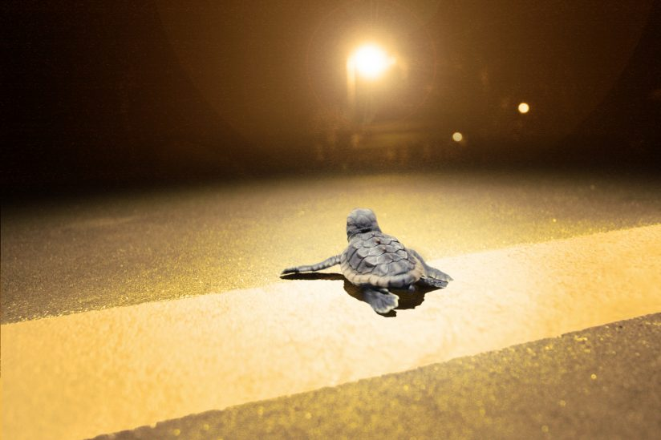
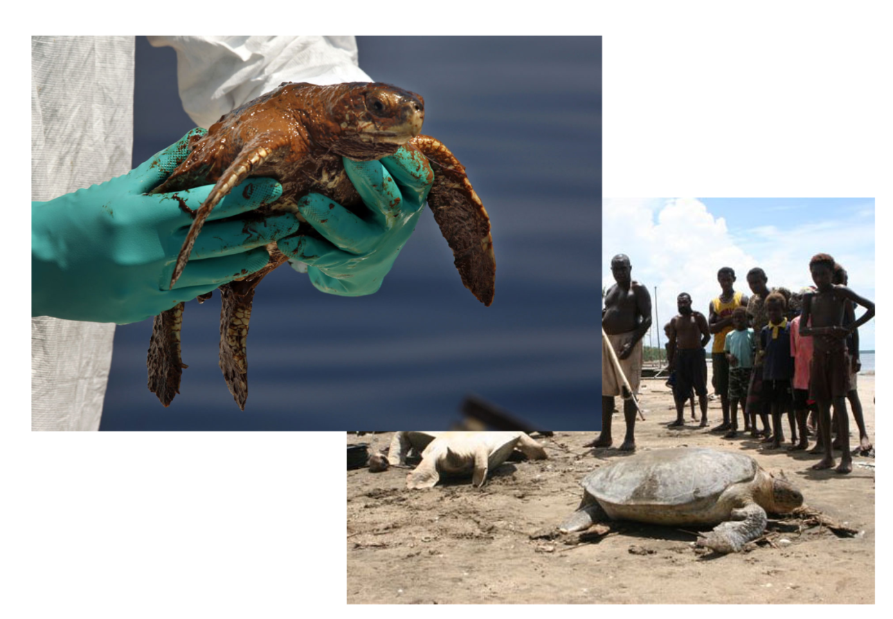
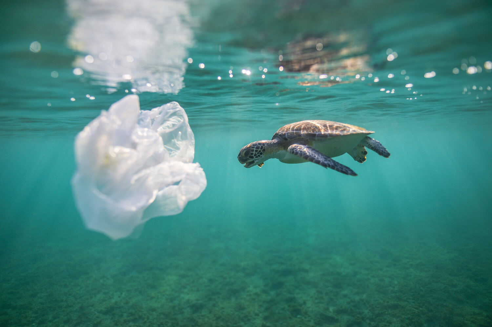
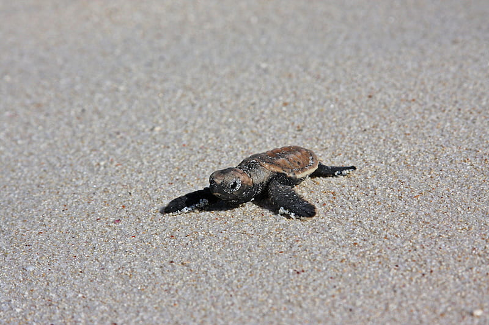

About turtles in SriLanka
Sri Lanka is one of those countries in the world that could boast of having the 3 major types of chelonians,
the freshwater terrapins, land tortoises and marine turtles.
Five of the seven species of sea turtles in the world visit the shores of Sri Lanka to breed. They are the Green Turtle (Chelonia mydas), Hawksbill Turtle (Eretmochelys imbricata), Olive Ridley (Lepidochelys olivacea), Loggerhead (Caretta caretta) and Leatherback (Dermochelys coriacea). The sea turtles are called Kesbawa in Sinhala and Amai in Tamil.
The freshwater turtles are Parker’s Black Turtle Sri Lanka Black Turtle and the Soft or Flapshell turtle.
The terrestrial tortoise is the Star tortoise.
Quite a few of these species are critically endangered due to the human race.

What is happening to the turtles of Srilanka?

What's amazing about sea turtles is that after years traveling the open ocean they return to the nesting grounds where they were born to lay their eggs. In their voyage from nesting to feeding grounds – some species will travel more than 1,000 miles.
But life is filled with danger for a sea turtle, especially the hatchlings. On the beach, birds, crabs, raccoons, even foxes will eat hatchlings. And if hatchlings make it to the ocean, they are still tasty snacks for seabirds and fish.
However, the greatest threats to sea turtles aren't from natural predators; they are from humans.
Accidental catch in commercial fisheries or entanglement in marine debris are serious threats to sea turtles, as well as destruction of beach habitat, harvesting or poaching for meat and eggs, and even boat strikes.
All these may initially sound miniscule but in reality millions of adult and immature turtles fall victim to such human activities.
What YOU can do.

-Reduce marine debris that may entangle or be accidentally eaten by sea turtles.
-Participate in coastal clean-ups and reduce plastic use to keep the beaches and ocean clean.
-Carry reusable water bottles and shopping bags.
-Refrain from releasing balloons, they'll likely end up in the ocean where sea turtles can mistake them for prey and consume them.
-Keep nesting beaches dark and safe for sea turtles. Turn off, shield, or redirect lights visible from the beach.
-Do not disturb nesting turtles, nests, or hatchlings (Attend organized sea turtle watches that know how to safely observe nesting sea turtles).
-Remove recreational beach equipment like chairs, umbrellas, boats at night so sea turtles are not turned away.
-Fill in holes and knock down sandcastles before you leave the beach. They can become obstacles for nesting turtles or emerging hatchlings.

What WE can do.
We, the "UNEDANGERED" organization(nonprofit), excel in saving endangered organisms and skyrocketing the organisms' population hence the name "UNENDANGERED".
With your help we are garaunteed to be able to save the turtles from danger. Our team of 'turtle rescuers' safegaurd nests and also rid the ocean of unwanted debris and plastics.
But to do all of these activities costs a large amount of money; therefore, we need YOUR help. For every $1 that is donated, we will rid 1 pound of rubbish from the ocean and help save atleast 10 endangered hatchlings.
By donating $10, you have cleaned 10 pounds of trash and saved 100 hatchlings. 100% of the money that is being donated goes to save not just turtles but also overall sealife.
DONATE TO SAVE TURTLES AND SEALIFE NOW!